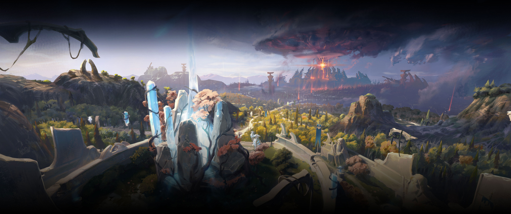

Безопасные моды для Dota 2. Полностью совместимы с VAC, легко устанавливаются и позволяют персонализировать игру.
Скачать сейчасВсе моды прошли проверку и не вызывают бан.
Более 200 аркан, звуковых паков и карт.
Одно‑кликовая установка через встроенный менеджер.

Каждый мод проходит автоматическую проверку на сигнатуру, чтобы гарантировать отсутствие чит‑кода.
Вы можете наслаждаться кастомизацией без риска блокировки аккаунта.